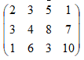

1.1 Научиться решать транспортные задачи методом потенциалов.
2 Литература:
2.1 Гетманчук А. В. Экономико-математические методы и модели : учеб. пособие для бакалавров / А. В. Гетманчук, М. М. Ермилов. - М. : Издательско-торговая корпорация «Дашков и Ко», 2015. - 188 с. - Электронное издание. - Режим доступа: http://ibooks.ru.
3 Теоретические сведения:
Пусть в m пунктах отправления (производств А1, А2, …, Аm) сосредоточен однородный груз в количествах соответственно а1, а2, …, аm единиц. Этот груз необходимо доставить потребителям В1, В2, …, Вn спрос которых выражается величинами b1, b2, …, bn. Известна стоимость перевозки Сij единицы i - пункта отправления в j - пункт назначения. Требуется составить план перевозок, который полностью удовлетворит спрос потребителя в грузе и при этом, суммарно транспортные издержки будут минимальны.
Таким образом, необходимо минимизировать линейную функцию
при ограничениях xij >= 0,
В зависимости от соотношений между суммарными запасами груза и суммарными потребностями в нем транспортные задачи делятся на два вида:
1) закрытые, для которых сумма значений всех грузов совпадает с суммой всех потребностей в данном грузе
2) открытые, для которых сумма значений всех грузов не совпадает с суммой всех потребностей в данном грузе
При введении фиктивного поставщика или потребителя открытая задача становится закрытой. Причем тарифы соответствующие фиктивному поставщику или потребителю устанавливаются большими или равными наибольшему из всех тарифов. В целевой функции фиктивный поставщик или потребитель не участвуют.
Если сумма запасов больше суммы потребностей, то водится фиктивный n+1 потребитель, потребности которого:
Модель такой задачи имеет вид
при ограничениях
Если сумма запасов меньше суммы потребностей, то для решения вводим фиктивного m + 1 поставщика, запасы которого:
Модель такой задачи имеет вид: при ограничениях
Существует несколько методов решения транспортных задач. Рассмотрим решение транспортных задач методом потенциалов.
Образец выполнения задания:
На складе имеются запасы светильников в количестве 10, 15, 20. Потребители должны получить эту продукцию в количестве 11, 5, 6, 21. Найти вариант перевозки продукции, при которой минимизируются расходы.
Расходы заданы матрицей: 
1 Построим транспортную таблицу 4.1, где: A1 ... A3 - поставщики; B1 ... B4 - потребители.
Выясним, является ли задача задачей закрытого типа: m+n–1=4+3–1=6.
Распределим грузы по методу минимального тарифа. Грузы распределяются в первую очередь в клетки, в которых находятся минимальные тарифы перевозки , далее поставки распределяются в незакрытые клетки с наименьшими тарифами с учетом оставшихся запасов у поставщиков и удовлетворение спросов потребителей. Процесс продолжается до тех пор, пока все грузы от поставщиков не будут вывезены, а потребители не будут удовлетворены.
Находим клетку A1B4 и ставим в нее 10, затем в клетку A3B1 ставим значение 11, т.к. они имеют наименьший тариф 1. Далее из оставшихся клеток также находим клетки с минимальным тарифом: это A3 B3 = 6, A2 B2 = 7, A2 B4 = 8, A3 B4 = 3.
Проверяем, является ли задача вырожденной: m + n – 1 = 4 + 3 – 1 = 6. Базисных клеток 6, следовательно, задача невырожденная. Составим систему уравнений для потенциалов:
Решение является не оптимальным.
Отметим в исходной таблице цикл, соответствующий переменной х32, вершины цикла находятся в базисных клетках. Проставим в вершинах цикла поочередно знаки + и – начиная с клетки х32.
1 Определим в этом цикле минимальную перевозку в отрицательных базисных клетках. min {3, 7}=3=> х34 = 3.
2 Произведем движение по циклу. Прибавим значение х34 = 3 к х24, х32 и вычтем из х22. По полученным данным построим улучшенную таблицу решения (см. таблицу 4.2).
Составим систему уравнений для потенциалов.
Решение является оптимальным. Находим базисную функцию:
4 Задание
4.1 Решить транспортную задачу методом потенциалов (Таблица 4.3).
4.2 Решить транспортную задачу методом потенциалов (Таблица 4.4).
5 Содержание отчета:
5.1 Наименование и цель работы.
5.2 Выполненное задание
6 Контрольные вопросы:
6.1 Что представляют собой задачи оптимизации и в чем особенность задач линейного программирования?
6.2 Какие методы применяют для решения задач линейного программирования?
6.3 Что представляет собой транспортная задача?
6.4 Какие методы применяют для решения транспортной задачи?
6.5 В каком случае транспортная задача называется открытой (закрытой)?